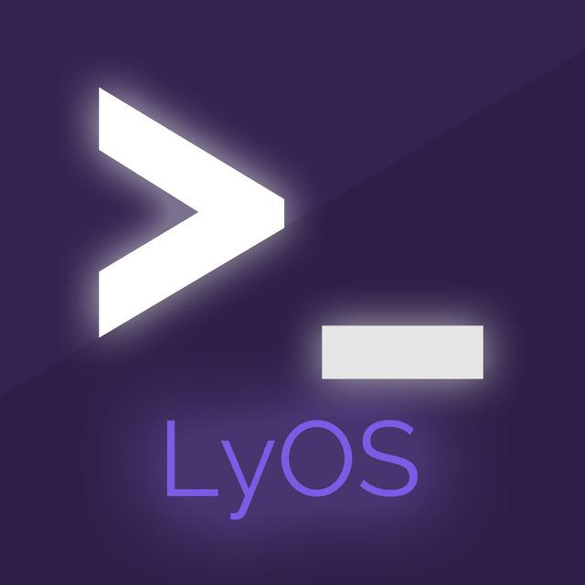

Hi, I'm Yuri Ly — I lead AI at a large manufacturing group, and build Telegram products used by millions
Developer, researcher and implementer based in Ukraine. Self-taught from twelve, writing code ever since. Currently AI lead at KNESS — driving the company's AI adoption end to end. On the side, a small constellation of Telegram bots
What I'm doing
Selected work
7 live · rest in archiveThe largest sticker platform on Telegram. Bot, site, Mini App and an Android app — one stack, one person on support
Drop any Telegram message in, get back a clean quote image. Peaks at 48 000 messages per minute. Lives inside other people's groups without friction
AI agents and automation running inside a real business. Not PoCs, not prototypes — systems the company actually depends on, picked for outcome
Group administration for serious Telegram communities. Moderation, anti-spam, reputation — the quiet scaffolding
A small SaaS for teams: tickets, routing, handoffs — all inside Telegram, no separate dashboard to learn
Search YouTube Music from Telegram, get audio in original quality. Small, fast, personal

Multiplayer hacker simulator. Attack, defend, upgrade. Built in evenings, ongoing
About
Started at twelve, editing uCoz sites with too much time on my hands. Then came PHP, then VK bots, then the Telegram ecosystem I still live inside today.
Millions of people have used something I wrote — mostly through fStik and QuotLy. I also won first place at the official Telegram Mini App Contest. Fun part of the CV, not the main thing anymore.
I do that at KNESS, a large manufacturing group, as AI lead. I research what's worth building, build it, wire it into real systems, and stay to make it stick. Developer, researcher, implementer, all in one seat. Servers, databases and plumbing for my own projects stay in my own hands.
On the side I run my own bots, take on select consulting — particularly when the problem is ugly and the demo budget is zero — and write at @LyBlog
How I build
Day-to-day I write TypeScript on Node.js, frontends in React / Next.js. AI work on top of OpenAI, Claude, Gemini and whichever models and tools are currently winning. Telegram is Telegraf, grammY, TDLib, MTProto, Mini Apps. My own projects run on my own boxes: Linux, Docker, Sentry, Prometheus, large MongoDB / Postgres / Redis / BullMQ clusters and boring CI
Get in touch
Email is best for business. Telegram is fastest for everything else. I read everything